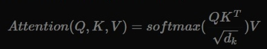
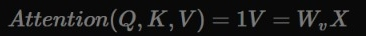

Transformers
Es una Arquitectura de Red neuronal Introducida en 2017 en el articulo "Attention is all you need" (Atencion es todo lo que necesitas)¿Qué es la atención?
Un mecanismo de atención, en las redes neuronales, consiste en una operación matemática que recibe como inputs un conjunto de vectores (que ya sabemos que pueden representar texto, imágenes o cualquier tipo de datos con el que trabajemos) y nos da como resultado otro conjunto de vectores. Este resultado dependerá, del tipo de mecanismo de atención que se utilize.Mecanismos de Atencion
- Hard attention
- Soft attention
- Self attention
Hard attention mechanism
Conocido como hard attention mechanism. En este tipo de atención generaremos un número de vectores a la salida igual a los de la entrada (de ahora en adelante asumiremos que este es siempre el caso a no ser que se indique lo contrario) en el que cada output atenderá únicamente a su correspondiente vector a la entrada. O dicho de otra forma, este mecanismo de atención no produce nada nuevo, produce a la salida lo mismo que recibe a la entrada.
Soft attention mechanism
Si en el caso de la atención fuerte, cada vector generado presta atención simplemente a un único vector en la entrada, en el caso de la atención débil vamos a permitir prestar atención a todos los vectores a la entrada. Así pues, cada vector generado será una combinación de los inputs. En el siguiente ejemplo, cada vector generado presta un 70% de atención al vector en la entrada en su misma posición y un 15% al resto.
Diferencia entre Soft attention y Hard attention
Self attention
Cada vector es responsable de decidir cuánta atención prestar al resto. Para ello calcularemos la similitud entre vectores. Cuanto más parecidos sean dos vectores, más atención habrá entre ellos y viceversa. Esta similitud la calculamos multiplicando los vectores por si mismos y aplicando una función softmax.
Scaled Dot-Product attention

Este mecanismo de atención consiste en tres conjuntos de vectores K , Q y V , llamados respectivamente keys, queries y values.
Utilizaremos K y Q para calcular la matriz de atención, la cual aplicaremos a V .
¿Si utilizamos el mecanismo de self-attention en esta formulación?

En este caso escalamos el producto de Q y K con la raíz cuadrada de su dimensión, dk (detalles técnicos).
¿De dónde vienen estas Q , K y V ? Aquí es donde entra en juego la componente de aprendizaje. Para que este sistema sea capaz de aprender, calcularemos los diferentes vectores utilizando perceptrones: Q=WqX , K=WkX y V=WvX . De esta manera, nuestro sistema será capaz de calcular la mejor representación de X para obtener un alineamiento óptimo en el mecanismo de atención.
¿Si utilizamos el mecanismo de hard-attention en esta formulación?

Un mecanismo de atención, con hard-attention, no es más que un perceptrón. Esto significa que un perceptrón es en realidad un caso particular de un mecanismo más general y potente. Esto abre un nuevo abanico de arquitectura, más allá del transformer, basado en mecanismos de atención. A grandes rasgos, puedes entender el mecanismo de atención como un perceptrón cuyos pesos dependen de los datos, en vez de ser siempre los mismos (resultado del entrenamiento).
Multi-Head Self-Attention

Este mecanismo toma inspiración en el uso de múltiples filtros en una red convolucional para mejorar la capacidad de representación de datos. En el contexto de atención, esto se traduce en repetir un número determinado de veces (heads o cabezas) el mecanismo de scaled-dot product attention

Donde head es scaled-dot product attention

A grandes rasgos, repetimos el mecanismo de atención aplicando diferentes proyecciones a la hora de obtener nuestras queries, keys y values. Una vez aplicada la atención a cada cabeza, concatenamos los resultados y aplicamos una nueva capa lineal para obtener el resultado final.